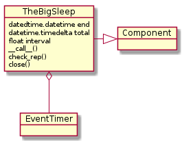

This is a module to integrate pauses with human-readable feedback into the ape.
TheBigSleep takes three parameters – end, total, and interval.
- The interval is the amount of time to sleep between printing status messages to the screen.
- The end is a datetime set to the time (and date) to end
- The total is a timedelta set to amount of time in the future to end
Either the ape or the total needs to be set and if you set both the total will be ignored in favor of the end.
end |
total |
Outcome |
|---|---|---|
| None | None | ApeError raised |
| None | timedelta | now() + total used |
| datetime | None | end used |
| datetime | timedelta | end used |

TheBigSleep |
|
TheBigSleep.end |
|
TheBigSleep.total |
|
TheBigSleep.zero |
|
TheBigSleep.timer |
|
TheBigSleep.then |
|
TheBigSleep.emit |
|
TheBigSleep.check_rep |
|
TheBigSleep.close |
|
TheBigSleep.__call__ |
Note
This might only have come about because I started using the EventTimer to prevent over-eager access to a server, rather than trying to use it to space intervals, but it didn’t occur to me originally that the times have to be calculated in the method that is wrapped by the wait decorator, because the wait comes before the method call, leaving it 1-second or so behind the time it was called.
The Big Sleep is being used both as a component within quality-checks and as a plugin so the __call__ was modified to accept arguments that it ignores.